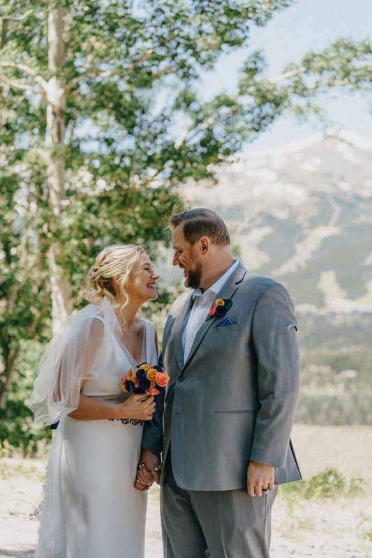
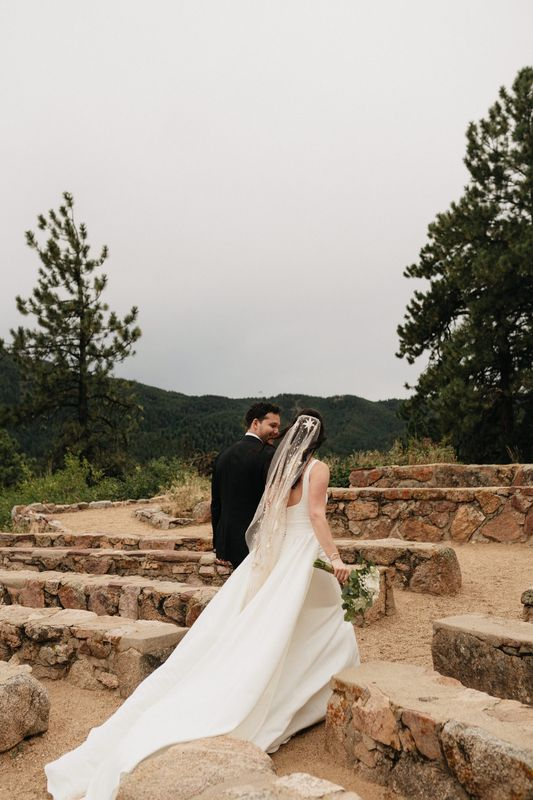
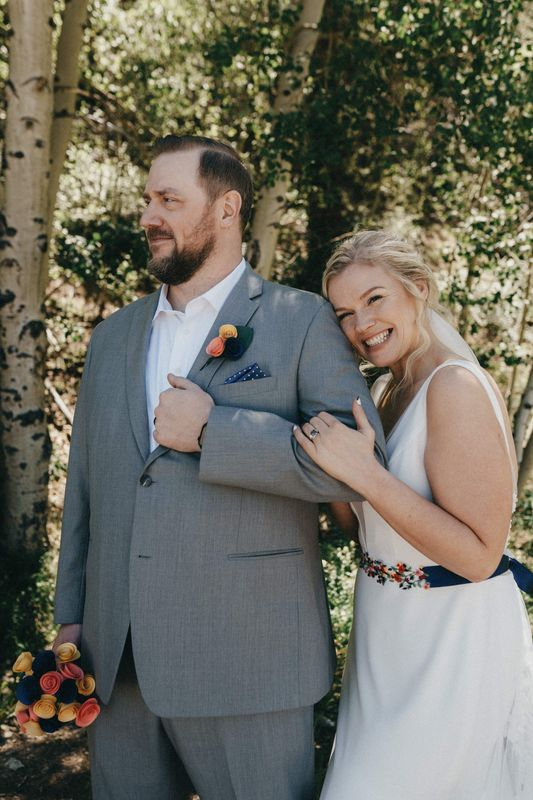
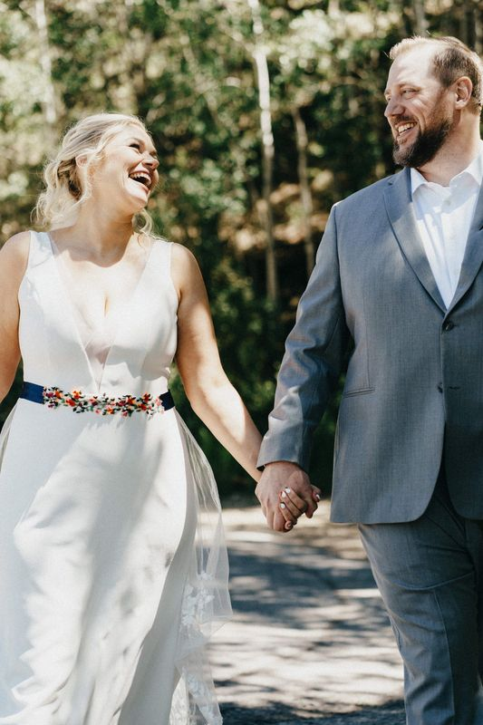
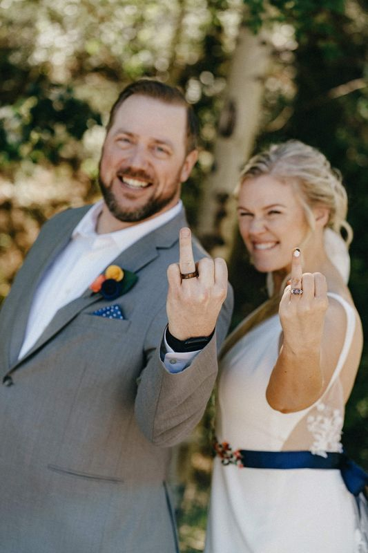
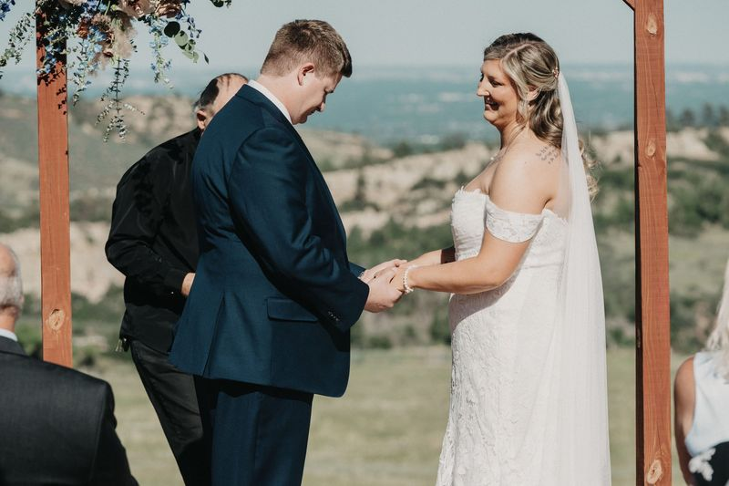
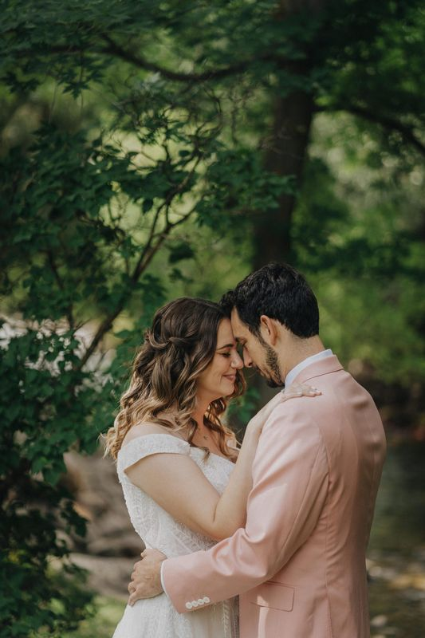
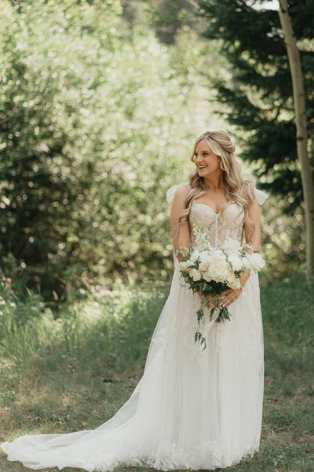
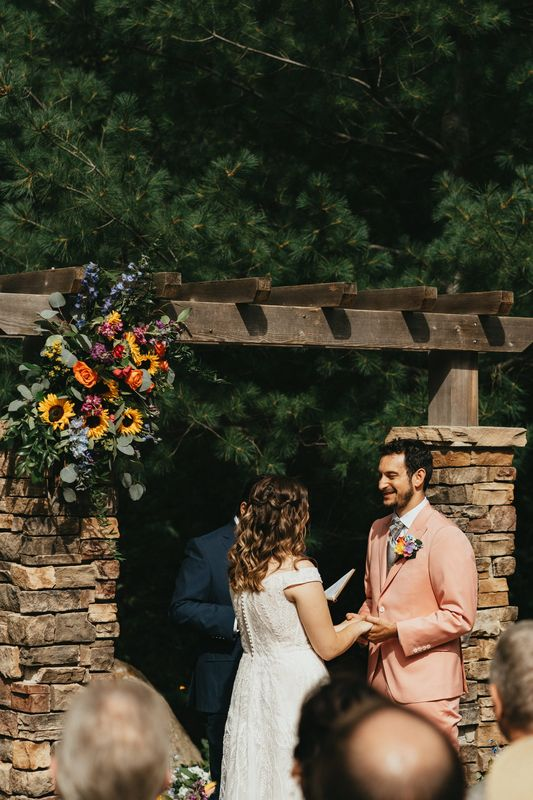
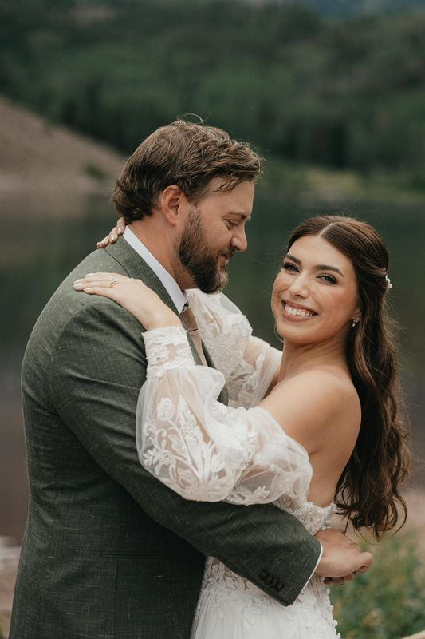

Weddings & elopements · Colorado
Colorado Mountain Wedding & Elopement Photographer
Aspen groves, alpine lakes, red rock ridgelines and enormous open skies — Colorado was made for weddings and elopements.
I’m a Denver-based photographer who will happily follow your story up the mountain. One weekend it’s a wedding high in the Rockies; the next it’s a quiet elopement with just the two of you. Either way, I keep things easy-going and fun, so you can soak in the view and be yourselves while I hunt for the photos that look like you.
My calendar is full for the rest of 2026, but I’d love to hear about your date.
Inquire about your weddingFrom the mountains & the foothills
Colorado wedding photos
















Planning help
Planning a mountain wedding or elopement
A few things I’ve learned that make a Colorado mountain day go smoothly.
Plan around the weather
Mountain weather changes fast, and summer afternoons often bring thunderstorms. Morning and early-evening ceremonies are usually safer, and a backup spot you love as much as the main one takes the pressure off.
Chase the light, not just the sunset
Ridgelines block the sun well before the official sunset time, so portraits in the mountains often need to happen earlier than you’d think. We’ll build your timeline around where the light will actually be.
Check permits and rules early
Many parks, national forests and other public lands require a permit for ceremonies or elopements, and some limit group size. Check with the managing agency as soon as you pick a location.
Leave extra time to get there
Winding roads, elevation and weekend traffic on the mountain highways add up. Give yourselves, your guests and your vendors a generous buffer.
Dress for the elevation
It cools off quickly in the mountains, even in summer. Bring layers, and plan comfortable shoes for uneven trails — you can always swap them back for the photos.
Pick your season on purpose
Summer brings green meadows and long days, fall brings golden aspens (usually late September into early October, depending on elevation), and winter elopements can be quiet, snowy and unforgettable.
Kind words
From couples I’ve photographed
★★★★★“Nic captured my elopement this summer and it was the best decision. Our photos turned out so beautiful, Nic made it so easy the day of, and went above and beyond. This is the type of human you want to hire, for who he is, and for how seriously he takes capturing your most precious memories.”
★★★★★“Of all the vendors we had Nic Neumann Photography was by far the most outstanding we had. We appreciate all of the little details that he does just to make the day go as smoothly as possible and adding in key moments to slow down and enjoy the day. Beautiful photos and amazing professionalism.”
Now booking 2027 & 2028
Let’s plan your Colorado wedding
Tell me about your date, your dream location and what you’re picturing. I can’t wait to hear from you.
Start the conversationPrefer email? hello@nicneumannphoto.com